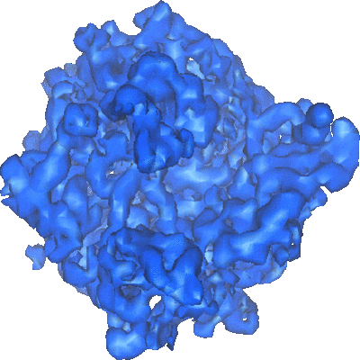
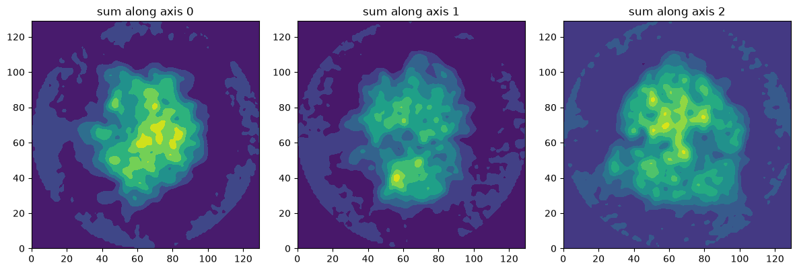
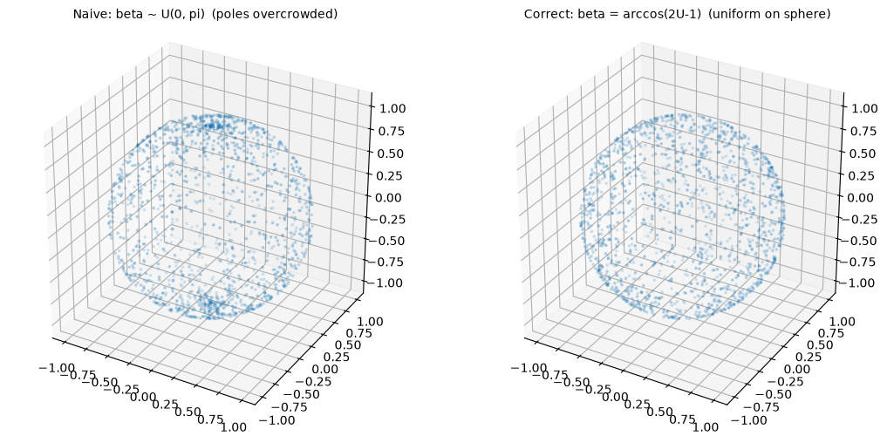
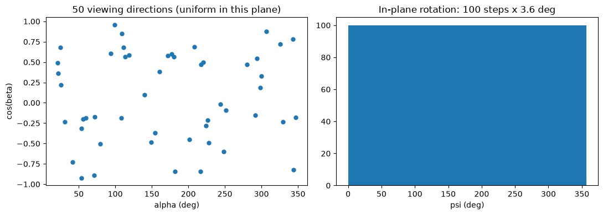
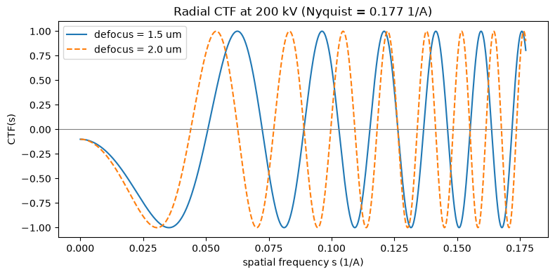
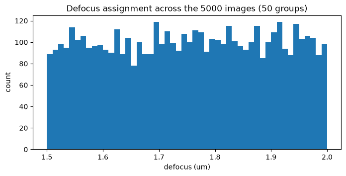
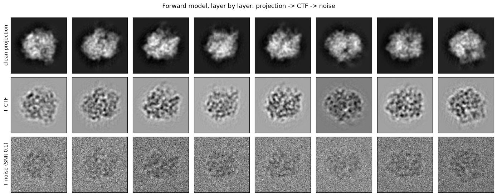
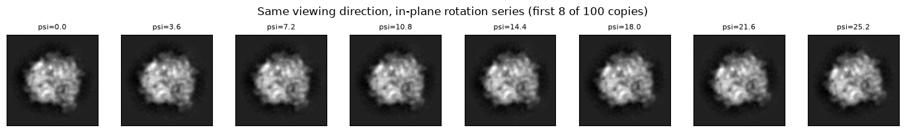
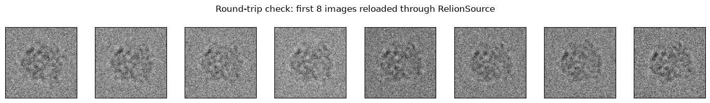

合成資料的生成#
本章重點
前向模型（forward model）就是生成流程：3D 密度圖 → 投影 → CTF → 雜訊，一步一步把「顯微鏡做的事」寫成程式。
球面均勻取樣不是均勻取角度：\(\beta = \arccos(2U-1)\) 才均勻，天真的 \(\beta = U\pi\) 會讓方向擠向兩極。
CTF 有零點，零點處的資訊永遠遺失——所以要收多組 defocus 的資料互補。
SNR 有不只一種定義，寫論文與讀論文時都要先確認用的是哪一種。
合成資料的價值在於 ground truth 已知、變因可控：一次只打開一個變因，才能歸因。
{kind=link}

Fig. 17 70S 核糖體的 3D 密度圖（EMD-1056）。本章把這個 map 變成 5,000 張帶 CTF 與雜訊的模擬粒子影像。#
為什麼要合成資料？#
Cryo-EM 的觀測模型可以寫成一條式子。第 \(i\) 張粒子影像 \(X_i\) 是：
其中 \(V\) 是 3D 密度圖、\(P_{R_i}\) 是沿方向 \(R_i\) 的投影算子（把 3D 沿視線積分成 2D）、 \(\mathrm{CTF}_{d_i}\) 是 defocus 為 \(d_i\) 的對比轉移函數（以卷積作用，見 頻域影像處理：傅立葉轉換）、 \(N_i\) 是雜訊。生成合成資料，就是把這條式子由左到右執行一遍——所以寫生成程式是理解成像模型最扎實的方式。
合成資料還有兩個真實資料永遠給不了的東西：
Ground truth：每張影像的方向 \(R_i\)、defocus \(d_i\)、（若有）平移與構型標籤都已知，演算法的輸出可以直接對答案、量化評估。
變因控制：真實資料的方向分布、雜訊、樣品異質性全部糾纏在一起；模擬資料可以把它們一項一項關掉，一次只研究一個。
本章前半用 ASPIRE-Python 重現一條教學用管線 （130×130、5,000 張、SNR 0.1），後半對照研究論文實際使用的「研究等級」生成協定。
階段一：參數設定#
授課重點
每個參數都對應一個物理量：pixel size 決定 Nyquist 解析度上限 \(1/(2 \times 2.82) \approx 0.177\ \mathrm{Å}^{-1}\)（約 5.6 Å）； 200 kV 決定電子波長 \(\lambda \approx 0.0251\) Å；defocus 與 Cs 決定 CTF 的振盪；SNR 0.1 是刻意選的—— 真實 cryo-EM 影像的 SNR 常在 0.1 以下（見 Cryo-EM 背景：為什麼要用冷凍電鏡看蛋白質），太乾淨的模擬資料測不出演算法的真本事。
import os
import logging
import numpy as np
import matplotlib.pyplot as plt
import mrcfile
from aspire.operators import RadialCTFFilter
from aspire.source import Simulation
from aspire.source.relion import RelionSource
from aspire.volume import Volume
logging.getLogger("aspire").setLevel(logging.WARNING) # 靜音 ASPIRE 的 INFO 訊息
np.random.seed(0) # 固定隨機種子，讓全章結果可重現
# 影像尺寸與張數
img_size = 130 # 影像邊長（像素）
num_imgs = 5000 # 總張數
duplicate = 100 # 每個投影方向複製幾份（做 in-plane 旋轉）
num_maps = 1 # 使用幾個 3D map（本章只用一個構型）
# 訊噪比
sn_ratio = 0.1
# CTF 參數
pixel_size = 2.82 # 像素大小（Å）
voltage = 200 # 加速電壓（kV）
defocus_min = 1.5e4 # 最小 defocus（Å），即 1.5 µm
defocus_max = 2.0e4 # 最大 defocus（Å），即 2.0 µm
defocus_ct = 50 # defocus 群組數
Cs = 2.0 # 球面像差（mm）
alpha = 0.1 # amplitude contrast
階段二：載入 3D 密度圖#
密度圖以 MRC 格式儲存（1024 bytes 的 header + 二進位陣列，見 影像處理基礎：從 NumPy 陣列到幾何變換 的 「與 cryo-EM 的連結」）。讀進來就是一個 \(130^3\) 的 NumPy 陣列。
with mrcfile.open("data/70S_Conform1.mrc") as infile:
vols = infile.data
v = Volume(vols)
print(f"volume shape = {vols.shape}, dtype = {vols.dtype}")
volume shape = (130, 130, 130), dtype = float32
「投影」最直觀的版本就是沿某個軸把體素加總（沿視線積分）。先沿三個座標軸各看一次：
fig, axes = plt.subplots(1, 3, figsize=(12, 4))
for axis in range(3):
axes[axis].contourf(np.arange(img_size), np.arange(img_size), np.sum(vols, axis=axis))
axes[axis].set_title(f"sum along axis {axis}")
axes[axis].set_aspect("equal")
plt.tight_layout()
plt.show()

階段三：投影方向（Euler 角）#
一個投影方向由 ZYZ 慣例的三個 Euler 角 \((\alpha, \beta, \gamma)\) 描述：前兩個角 \((\alpha, \beta)\) 決定「從哪個方向看」（視線方向落在單位球面上），第三個角 \(\gamma\)（又稱 \(\psi\)）只是影像平面內的自轉 （in-plane rotation），不會產生新的視角。
這條管線用「50 個獨立方向 × 每方向 100 份 in-plane 旋轉」的設計：50 個視角均勻撒在球面上， 每個視角的 100 份以 3.6° 為步長轉滿一圈。這樣資料同時涵蓋「視角變化」與「平面旋轉」兩種變因， 而且每張影像的類別標籤（屬於哪個視角）已知——正是 2D 分類演算法要還原的答案。
授課重點：球面均勻取樣
要在球面上均勻取點，傾角 \(\beta\) 不能直接取均勻分布 \(\beta = U\pi\)—— 球面上緯度帶的面積正比於 \(\sin\beta\)，天真取法會讓點擠向兩極。 正確做法是讓 \(\cos\beta\) 均勻：\(\beta = \arccos(2U - 1)\)，\(U \sim \mathrm{Uniform}[0,1]\)。 下面的對照圖是本章最值得記住的一張。
# 對照：天真取樣 vs 正確取樣（各 1500 點撒在單位球面上）
n_demo = 1500
u1, u2 = np.random.random(n_demo), np.random.random(n_demo)
alpha_demo = 2 * np.pi * u1
beta_naive = np.pi * u2 # 天真：beta 均勻
beta_correct = np.arccos(2 * u2 - 1) # 正確：cos(beta) 均勻
fig = plt.figure(figsize=(11, 5))
for k, (beta_demo, title) in enumerate(
[(beta_naive, "Naive: beta ~ U(0, pi) (poles overcrowded)"),
(beta_correct, "Correct: beta = arccos(2U-1) (uniform on sphere)")]
):
x = np.sin(beta_demo) * np.cos(alpha_demo)
y = np.sin(beta_demo) * np.sin(alpha_demo)
z = np.cos(beta_demo)
ax = fig.add_subplot(1, 2, k + 1, projection="3d")
ax.scatter(x, y, z, s=3, alpha=0.5)
ax.set_title(title, fontsize=10)
ax.set_box_aspect((1, 1, 1))
plt.tight_layout()
plt.show()

左圖兩極明顯過密；右圖才是球面均勻。接著產生正式的 5,000 組角度：
n_views = int(num_imgs / duplicate) # 50 個獨立方向
rot = np.repeat(np.random.random(n_views) * 2 * np.pi, duplicate) # alpha
tilt = np.repeat(np.arccos(2 * np.random.random(n_views) - 1), duplicate) # beta（球面均勻）
psi = np.tile(np.linspace(0, 2 * np.pi, duplicate, endpoint=False), n_views) # gamma：3.6° 步長
my_angles = np.column_stack((rot, tilt, psi))
print(f"angles shape = {my_angles.shape}")
angles shape = (5000, 3)
# 方向覆蓋圖：50 個視角在 (alpha, cos beta) 平面上的位置 + psi 的分布
fig, axes = plt.subplots(1, 2, figsize=(11, 4))
axes[0].scatter(np.degrees(rot[::duplicate]), np.cos(tilt[::duplicate]), s=25)
axes[0].set_xlabel("alpha (deg)")
axes[0].set_ylabel("cos(beta)")
axes[0].set_title("50 viewing directions (uniform in this plane)")
axes[1].hist(np.degrees(psi), bins=50)
axes[1].set_xlabel("psi (deg)")
axes[1].set_title("In-plane rotation: 100 steps x 3.6 deg")
plt.tight_layout()
plt.show()

階段四：CTF#
顯微鏡不是完美的相機：離焦（defocus）與球面像差讓不同空間頻率的對比被不同程度地放大、 縮小、甚至反相。這個頻域的轉移函數就是 CTF（contrast transfer function）：
其中 \(s\) 是空間頻率、\(\Delta f\) 是 defocus、\(\lambda\) 是電子波長、\(w\) 是 amplitude contrast。 這正是 頻域影像處理：傅立葉轉換 講的「頻域濾波」——只是這一次，濾波器是顯微鏡的物理強加給我們的。
授課重點：為什麼要 50 組 defocus？
CTF 是振盪函數，過零點處該頻率的資訊直接歸零，任何事後處理都救不回來。 但零點位置隨 defocus 移動——一張影像在某頻率瞎了，另一張不同 defocus 的影像在那裡看得見。 收集多組 defocus（本章 50 組，均勻鋪在 1.5–2.0 µm）讓整個資料集沒有共同盲點。
def electron_wavelength(voltage_kv):
"""相對論修正的電子波長（Å）；voltage 單位 kV。"""
v = voltage_kv * 1e3
return 12.2639 / np.sqrt(v + 0.97845e-6 * v**2)
def ctf_1d(s, defocus_A, voltage_kv=200, cs_mm=2.0, w=0.1):
"""一維徑向 CTF。s: 空間頻率 (1/Å)，defocus_A: defocus (Å)。"""
lam = electron_wavelength(voltage_kv)
cs_A = cs_mm * 1e7
gamma = 2 * np.pi * (-0.5 * defocus_A * lam * s**2 + 0.25 * cs_A * lam**3 * s**4)
return np.sqrt(1 - w**2) * np.sin(gamma) - w * np.cos(gamma)
nyquist = 1 / (2 * pixel_size)
s = np.linspace(0, nyquist, 800)
plt.figure(figsize=(9, 4))
for d, style in [(1.5e4, "-"), (2.0e4, "--")]:
plt.plot(s, ctf_1d(s, d, voltage, Cs, alpha), style, label=f"defocus = {d/1e4:.1f} um")
plt.axhline(0, color="gray", lw=0.8)
plt.xlabel("spatial frequency s (1/A)")
plt.ylabel("CTF(s)")
plt.title(f"Radial CTF at {voltage} kV (Nyquist = {nyquist:.3f} 1/A)")
plt.legend()
plt.show()

兩條曲線的零點錯開——這就是「多 defocus 互補」的意義。ASPIRE 用 RadialCTFFilter
表達徑向對稱的 CTF；建 50 個、defocus 均勻鋪滿範圍：
ctf_filters = [
RadialCTFFilter(voltage=voltage, defocus=d, Cs=Cs, alpha=alpha)
for d in np.linspace(defocus_min, defocus_max, defocus_ct)
]
print(f"built {len(ctf_filters)} RadialCTFFilter objects")
built 50 RadialCTFFilter objects
版本陷阱（ASPIRE 0.14.3）
舊版教學程式常見兩個坑：(1) 舊版 RadialCTFFilter(pixel_size, voltage, ...) 把 pixel size
當第一個參數；新版沒有這個參數，pixel size 改由 Simulation 管理。
(2) 更危險的是：Simulation(...) 不給 pixel_size 不會報錯，它默默改用 1.0 Å——
CTF 在錯的頻率軸上被評估，圖全錯但程式照跑（實測與正確版本差約 150% 相對 L2）。
「不會爆炸的錯誤」比 crash 可怕，這是模擬程式必須留 metadata、可驗證的理由之一。
階段五：組裝 Simulation 物件#
授課重點：一次只開一個變因
ASPIRE 的 Simulation 預設會加隨機平移（offsets，預設 \(\pm L/16\)）與隨機亮度
（amplitudes，預設 2/3–3/2）。這裡刻意設 offsets=0.0、amplitudes=1.0 把它們關掉——
先在「已對齊、等亮度」的理想條件下研究分類與去噪，之後要研究對齊演算法時再單獨打開平移。
模擬資料的價值就在這種逐項控制。
sim = Simulation(
L=img_size,
n=num_imgs,
vols=v,
C=num_maps,
unique_filters=ctf_filters,
angles=my_angles, # 覆蓋預設的隨機方向，用我們自己設計的 50x100
offsets=0.0, # 關掉隨機平移（預設 ±L/16）
amplitudes=1.0, # 關掉隨機亮度（預設 2/3~3/2）
pixel_size=pixel_size, # 必須明給！省略時默默用 1.0 Å（見上方警告框）
)
print(f"Simulation ready: n = {sim.n}, L = {sim.L}, pixel_size = {sim.pixel_size} A")
Simulation ready: n = 5000, L = 130, pixel_size = 2.82 A
每張影像被隨機指派到 50 個 CTF 之一。看一下 defocus 在資料集中的分布：
defocus_values = np.linspace(defocus_min, defocus_max, defocus_ct)
assigned_defocus = defocus_values[sim.filter_indices]
plt.figure(figsize=(8, 3.5))
plt.hist(assigned_defocus / 1e4, bins=50)
plt.xlabel("defocus (um)")
plt.ylabel("count")
plt.title("Defocus assignment across the 5000 images (50 groups)")
plt.show()

階段六：三層影像——clean → +CTF → +noise#
Simulation 是惰性的：影像在被索取時才即時算出。三個層次各取一次：
sim.projections[...]：純投影（\(P_{R_i} V\)）sim.clean_images[...]：投影過 CTF（\(\mathrm{CTF}_{d_i} * P_{R_i} V\)），還沒加雜訊雜訊我們自己加，順便講清楚 SNR 的定義
imgs_clean = sim.projections[:num_imgs].asnumpy()
imgs_ctf_clean = sim.clean_images[:num_imgs].asnumpy()
print(f"projections: {imgs_clean.shape}, CTF-applied: {imgs_ctf_clean.shape}")
projections: (5000, 130, 130), CTF-applied: (5000, 130, 130)
授課重點：SNR 的定義不只一種
常見兩種：(1) 功率定義 \(\mathrm{SNR} = \frac{\|X\|^2 / N}{\sigma^2}\)（不扣平均）； (2) 變異數定義 \(\mathrm{SNR} = \frac{\mathrm{Var}(X)}{\sigma^2}\)（訊號先扣掉平均，The Elements of Statistical Learning 採此定義）。兩者在影像平均值不為零時數值不同。 本章用變異數定義：\(\sigma^2 = \mathrm{Var}(X_{\mathrm{clean}}) / \mathrm{SNR}\)。 讀論文比較不同方法的「SNR 0.1」之前，永遠先查作者用哪個定義。
noise_var = imgs_ctf_clean.var() / sn_ratio
imgs_noise = (
imgs_ctf_clean
+ np.sqrt(noise_var) * np.random.randn(num_imgs, img_size, img_size)
).astype(np.float32)
print(f"signal var = {imgs_ctf_clean.var():.4g}, noise var = {noise_var:.4g} (SNR = {sn_ratio})")
signal var = 0.0004785, noise var = 0.004785 (SNR = 0.1)
全章最重要的一張圖——同樣 8 個視角，三個層次並排：
idx = np.arange(0, 8 * duplicate, duplicate) # 8 個不同視角（每視角取第一份）
layers = [(imgs_clean, "clean projection"),
(imgs_ctf_clean, "+ CTF"),
(imgs_noise, "+ noise (SNR 0.1)")]
fig, axes = plt.subplots(3, 8, figsize=(14, 5.6))
for r, (stack, label) in enumerate(layers):
for c, i in enumerate(idx):
axes[r, c].imshow(stack[i], cmap="gray")
axes[r, c].set_xticks([]); axes[r, c].set_yticks([])
axes[r, 0].set_ylabel(label, fontsize=10)
plt.suptitle("Forward model, layer by layer: projection -> CTF -> noise")
plt.tight_layout()
plt.show()

注意兩件事：CTF 讓第二列出現對比反轉與暈圈（不是單純模糊）；加噪後的第三列， 粒子幾乎淹沒在雜訊裡——這就是演算法實際面對的輸入。再看看同一個視角的 in-plane 旋轉系列：
fig, axes = plt.subplots(1, 8, figsize=(14, 2))
for c in range(8):
axes[c].imshow(imgs_clean[c], cmap="gray") # 前 8 張同視角，psi 每步 +3.6 度
axes[c].set_title(f"psi={3.6*c:.1f}", fontsize=8)
axes[c].set_xticks([]); axes[c].set_yticks([])
plt.suptitle("Same viewing direction, in-plane rotation series (first 8 of 100 copies)")
plt.tight_layout()
plt.show()

階段七：輸出成 RELION 格式並讀回驗證#
業界標準格式是 STAR + MRCS 的分工：.star 是純文字的 metadata 表
（每列一顆粒子：Euler 角、defocus、指向影像的 編號@檔名.mrcs 位址），
.mrcs 是二進位影像堆疊。metadata 與影像分離，所以可以只改表格不動影像（反之亦然）。
一個實務細節：sim.save() 存的是乾淨的 CTF 影像（clean_images 那一層），
我們的雜訊是自己加的，所以存完要把 .mrcs 的內容覆寫成 noisy 版本——
這正好示範「STAR 不動、只換 MRCS」的操作。
out_dir = "data/output"
os.makedirs(out_dir, exist_ok=True)
star_path = os.path.join(out_dir, "simulate.star")
sim.save(star_path, batch_size=num_imgs, overwrite=True)
mrcs_path = os.path.join(out_dir, f"simulate_0_{num_imgs - 1}.mrcs") # ASPIRE 的命名慣例
with mrcfile.open(mrcs_path, mode="r+") as mrc:
mrc.set_data(imgs_noise) # 覆寫為 noisy stack（STAR 檔不動）
print(f"saved: {star_path}")
print(f"overwrote {mrcs_path} with the noisy stack "
f"({os.path.getsize(mrcs_path) / 1e6:.0f} MB)")
saved: data/output/simulate.star
overwrote data/output/simulate_0_4999.mrcs with the noisy stack (338 MB)
# 讀回驗證：RelionSource 解析 STAR、順著 index@path 位址載入影像
relion_src = RelionSource(star_path)
imgs_reloaded = relion_src.images[:8].asnumpy()
fig, axes = plt.subplots(1, 8, figsize=(14, 2))
for c in range(8):
axes[c].imshow(imgs_reloaded[c], cmap="gray")
axes[c].set_xticks([]); axes[c].set_yticks([])
plt.suptitle("Round-trip check: first 8 images reloaded through RelionSource")
plt.tight_layout()
plt.show()

STAR 檔的 metadata 也一起被讀回來了（Euler 角、defocus、位址都在表裡）：
meta = relion_src._metadata # dict of numpy arrays（欄名 = RELION 標籤）
print("metadata columns:")
print(sorted(meta.keys()))
metadata columns:
['__filter_indices', '__mrc_filename', '__mrc_filepath', '__mrc_index', '_aspireAmplitude', '_rlnAmplitudeContrast', '_rlnAnglePsi', '_rlnAngleRot', '_rlnAngleTilt', '_rlnClassNumber', '_rlnDefocusAngle', '_rlnDefocusU', '_rlnDefocusV', '_rlnImageDimensionality', '_rlnImageName', '_rlnImagePixelSize', '_rlnImageSize', '_rlnOpticsGroup', '_rlnOpticsGroupName', '_rlnOriginXAngst', '_rlnOriginYAngst', '_rlnSphericalAberration', '_rlnSymmetryGroup', '_rlnVoltage']
研究等級的生成協定#
上面的管線是教學版。發表論文用的合成資料，還會多做幾件事——每一件都對應一個 「審稿人會問」的問題：
面向 |
教學版（本章） |
研究版（例：Fourier 2SDR 論文的 70S 協定） |
|---|---|---|
視角取樣 |
隨機 50 方向（每次跑不同） |
Fibonacci 球格：確定性、可精確重現 |
方向分布 |
均勻 |
另備 preferred orientation 情境：10 個常見視角 ×400 張 + 40 個罕見視角 ×25 張，模擬真實資料的視角不平衡 |
輸出 |
noisy 一疊 |
三疊並存：noisy／clean observed（過 CTF、未加噪）／clean projection（純投影），評估時各有用途 |
Ground truth |
留在 Python 變數裡 |
獨立檔案（如 |
可重現性 |
|
manifest 檔記錄全部參數、seed、套件版本、資料 SHA-256 |
CTF |
徑向對稱、50 組 |
含像散（astigmatism：DefocusU ≠ DefocusV 加隨機像散角） |
其中「clean target 定義成 過 CTF、未加噪」值得特別說：去噪演算法的合理目標是移除雜訊， 不是反解 CTF（CTF 零點處的資訊本來就不存在，見階段四）——所以評估用的答案也應該帶著 CTF。
進階技巧：耦合雜訊（coupled noise）
研究版協定在多個 SNR（如 0.04／0.05／0.06）生成資料時，讓三份資料共用同一個雜訊實現 \(\varepsilon\)，只差縮放：\(X_a = X_{\mathrm{clean}} + \mathrm{SNR}_a^{-1/2}\,\sigma_0\,\varepsilon\)。 於是把兩個 SNR 的影像相減，乾淨訊號就完全消掉： \(X_a - X_b = (\mathrm{SNR}_a^{-1/2} - \mathrm{SNR}_b^{-1/2})\,\sigma_0\,\varepsilon\)—— 不碰 clean target 就能取得純雜訊實現、估計雜訊變異數，供 SURE 之類的無偏風險估計使用。
各家論文的合成協定比較#
同一個「合成 70S／模擬粒子」的任務，不同論文的設定差異很大——比較演算法時要先讀懂人家的協定：
論文 |
影像與視角 |
姿態變因 |
CTF 與雜訊 |
|---|---|---|---|
2SDR (2020) |
5,000 張、50 視角（10 常見 ×400 + 40 罕見 ×25）、130×130、2.82 Å |
未完全指明 |
50 組 CTF；300 kV、Cs 2 mm、w 0.07、defocus 2.1–3.5 µm；SNR 0.09/0.06/0.03 |
Zhao–Singer (2014) |
10,000 張 70S 投影、均勻方向、129×129 |
±4 px 隨機平移 |
20 組 defocus 1.5–4 µm；200 kV；AWGN SNR 1/50–1/200 |
SubspaceEM (2015) |
10,000 張、隨機視角 |
隨機旋轉+平移（搜 ±4 px） |
三組 CTF 擇一；SNR 0.05/0.02 |
AlignPCA-2D (2026) |
10 視角 ×3,000 張、128×128 |
隨機 in-plane 旋轉；平移 ±15 px |
300 kV、Cs 2.7 mm、defocus 0.6–2.0 µm；SNR 0.01 |
注意共同的骨架完全一樣（投影 → CTF → 加噪），差別全在參數與變因的開關—— 這正是本章「一次只開一個變因」哲學在文獻中的體現。
小結與練習#
我們把前向模型 \(X = \mathrm{CTF} * (P_R V) + N\) 走了一遍：載入密度圖、球面均勻取樣 50 個視角、 每視角 100 份 in-plane 旋轉、50 組 defocus 的 CTF、以變異數定義的 SNR 0.1 加白高斯雜訊， 最後存成 STAR + MRCS 並讀回驗證。生成的 5,000 張影像連同完整 ground truth， 就是後續開發 2D 分類、去噪、對齊演算法的測試場。
練習
異質性資料集：
dataset中還有第二個構型70S_Confrom2.mrc。把兩個構型各生成 2,500 張混在一起， 對 2D 分類的結果計算 purity——分類器能把兩個構型分開嗎？打開平移：把
offsets=0.0拿掉（回到預設 ±L/16 隨機平移），重畫三聯圖。 對齊（alignment）問題為什麼讓所有下游分析變難？Phase flipping：對 noisy 影像在頻域乘上 \(\mathrm{sign}(\mathrm{CTF})\) 做最簡單的 CTF 修正， 比較修正前後 100 張同視角影像的平均。這會用到 頻域影像處理：傅立葉轉換 的頻域濾波與 Wiener 一節。
耦合雜訊：用同一個 \(\varepsilon\) 生成 SNR 0.04 與 0.06 兩份資料，驗證相減後與 clean 訊號無關。
更多延伸資源見 延伸資源與下一步。